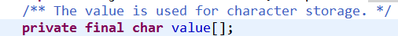

JAVA面试题目
1.Java中的String，StringBuilder，StringBuffer三者的区别
执行速度：StringBuilder > StringBuffer > String
String：适用于少量的字符串操作的情况
StringBuilder：适用于单线程下在字符缓冲区进行大量操作的情况
StringBuffer：适用多线程下在字符缓冲区进行大量操作的情况
2.Hashtable和HashMap的区别：
a) 继承不同。
public class Hashtable extends Dictionary implements Map
public class HashMap extends AbstractMap implements Map
b) Hashtable中的方法是同步的，而HashMap中的方法在缺省情况下是非同步的。在多线程并发的环境下，可以直接使用Hashtable，但是要使用HashMap的话就要自己增加同步处理了。
c) Hashtable 中， key 和 value 都不允许出现 null 值。 在 HashMap 中， null 可以作为键，这样的键只有一个；可以有一个或多个键所对应的值为 null 。当 get() 方法返回 null 值时，即可以表示 HashMap 中没有该键，也可以表示该键所对应的值为 null 。因此，在 HashMap 中不能由 get() 方法来判断 HashMap 中是否存在某个键， 而应该用 containsKey() 方法来判断。
d) 两个遍历方式的内部实现上不同。Hashtable、HashMap都使用了Iterator。而由于历史原因，Hashtable还使用了Enumeration的方式 。
e) 哈希值的使用不同，HashTable直接使用对象的hashCode。而HashMap重新计算hash值。
f) Hashtable和HashMap它们两个内部实现方式的数组的初始大小和扩容的方式。HashTable中hash数组默认大小是11，增加的方式是old*2+1。HashMap中hash数组的默认大小是16，而且一定是2的指数。
注： HashSet子类依靠hashCode()和equal()方法来区分重复元素。 HashSet内部使用Map保存数据，即将HashSet的数据作为Map的key值保存，这也是HashSet中元素不能重复的原因。而Map中保存key值的,会去判断当前Map中是否含有该Key对象，内部是先通过key的hashCode,确定有相同的hashCode之后，再通过equals方法判断是否相同。
3.乐观锁和悲观锁
悲观锁
总是假设最坏的情况，每次去拿数据的时候都认为别人会修改，所以每次在拿数据的时候都会上锁，这样别人想拿这个数据就会阻塞直到它拿到锁（共享资源每次只给一个线程使用，其它线程阻塞，用完后再把资源转让给其它线程）。传统的关系型数据库里边就用到了很多这种锁机制，比如行锁，表锁等，读锁，写锁等，都是在做操作之前先上锁。Java中synchronized和ReentrantLock等独占锁就是悲观锁思想的实现。
乐观锁
总是假设最好的情况，每次去拿数据的时候都认为别人不会修改，所以不会上锁，但是在更新的时候会判断一下在此期间别人有没有去更新这个数据，可以使用版本号机制和CAS算法实现。乐观锁适用于多读的应用类型，这样可以提高吞吐量，像数据库提供的类似于write_condition机制，其实都是提供的乐观锁。在Java中java.util.concurrent.atomic包下面的原子变量类就是使用了乐观锁的一种实现方式CAS实现的。
两种锁的使用场景
从上面对两种锁的介绍，我们知道两种锁各有优缺点，不可认为一种好于另一种，像乐观锁适用于写比较少的情况下（多读场景），即冲突真的很少发生的时候，这样可以省去了锁的开销，加大了系统的整个吞吐量。但如果是多写的情况，一般会经常产生冲突，这就会导致上层应用会不断的进行retry，这样反倒是降低了性能，所以一般多写的场景下用悲观锁就比较合适。
4.java的8种基本数据类型
四种整数类型(byte、short、int、long)、两种浮点数类型(float、double)、一种字符类型(char)、一种布尔类型(boolean)
类型转换： char–> 自动转换：byte–>short–>int–>long–>float–>double 强制转换：①会损失精度，产生误差，小数点以后的数字全部舍弃。②容易超过取值范围。
5.synchronized和Lock有什么区别？
①:synchronized是JVM层面实现的，java提供的关键字，Lock是API层面的锁。
②: synchronized不需要手动释放锁，底层会自动释放，
Lock则需要手动释放锁，否则有可能导致死锁
③:synchronized等待不可中断，除非抛出异常或者执行完成
Lock可以中断，通过interrupt()可中断
④: synchronized是非公平锁
Lock是默认公平锁，当传入false时是非公平锁
⑤:synchronized不可绑定多个条件
Lock可实现分组唤醒需要唤醒的锁
6.请说明一下JAVA中反射的实现过程和作用分别是什么？
JAVA语言编译之后会生成一个.class文件，反射就是通过字节码文件找到某一个类、类中的方法以及属性等。反射的实现主要借助以下四个类：Class：类的对象，Constructor：类的构造方法，Field：类中的属性对象，Method：类中的方法对象。
作用：反射机制指的是程序在运行时能够获取自身的信息。在JAVA中，只要给定类的名字，那么就可以通过反射机制来获取类的所有信息。
7.请你介绍一下map的分类和常见的情况
java为数据结构中的映射定义了一个接口java.util.Map;它有四个实现类,分别是HashMap Hashtable LinkedHashMap 和TreeMap.
Map主要用于存储健值对，根据键得到值，因此不允许键重复(重复了覆盖了),但允许值重复。
Hashmap 是一个最常用的Map,它根据键的HashCode值存储数据,根据键可以直接获取它的值，具有很快的访问速度，遍历时，取得数据的顺序是完全随机的。 HashMap最多只允许一条记录的键为Null;允许多条记录的值为 Null;HashMap不支持线程的同步，即任一时刻可以有多个线程同时写HashMap;可能会导致数据的不一致。如果需要同步，可以用 Collections的synchronizedMap方法使HashMap具有同步的能力，或者使用ConcurrentHashMap。
Hashtable与 HashMap类似,它继承自Dictionary类，不同的是:它不允许记录的键或者值为空;它支持线程的同步，即任一时刻只有一个线程能写Hashtable,因此也导致了 Hashtable在写入时会比较慢。
LinkedHashMap 是HashMap的一个子类，保存了记录的插入顺序，在用Iterator遍历LinkedHashMap时，先得到的记录肯定是先插入的.也可以在构造时用带参数，按照应用次数排序。在遍历的时候会比HashMap慢，不过有种情况例外，当HashMap容量很大，实际数据较少时，遍历起来可能会比 LinkedHashMap慢，因为LinkedHashMap的遍历速度只和实际数据有关，和容量无关，而HashMap的遍历速度和他的容量有关。
TreeMap实现SortMap接口，能够把它保存的记录根据键排序,默认是按键值的升序排序，也可以指定排序的比较器，当用Iterator 遍历TreeMap时，得到的记录是排过序的。
一般情况下，我们用的最多的是HashMap,在Map 中插入、删除和定位元素，HashMap 是最好的选择。但如果您要按自然顺序或自定义顺序遍历键，那么TreeMap会更好。如果需要输出的顺序和输入的相同,那么用LinkedHashMap 可以实现,它还可以按读取顺序来排列.
8.说说 synchronized 关键字和 volatile 关键字的区别？
volatile 是变量修饰符；synchronized 是修饰类、方法、代码段。
volatile 仅能实现变量的修改可见性，不能保证原子性；而 synchronized 则可以保证变量的修改可见性和原子性。
volatile 不会造成线程的阻塞；synchronized 可能会造成线程的阻塞。
volatile关键字是线程同步的轻量级实现。所以volatile性能肯定比synchronized关键字要好。但是volatile关 键字只能用于变量而synchronized关键字可以修饰方法以及代码块。
synchronized关键字在JavaSE1.6之后进 行了主要包括为了减少获得锁和释放锁带来的性能消耗而引入的偏向锁和轻量级锁以及其它各种优化之后执行 效率有了显著提升，实际开发中使用 synchronized 关键字的场景还是更多一些。
多线程访问volatile关键字不会发生阻塞，而synchronized关键字可能会发生阻塞 volatile关键字能保证数据的可见性，但不能保证数据的原子性。synchronized关键字两者都能保证。
volatile关键字主要用于解决变量在多个线程之间的可见性，而 synchronized关键字解决的是多个线程之间访 问资源的同步性。
9.hashCode 与 equals ？为什么重写equals时必须重写hashCode方法？
hashCode（）介绍
hashCode() 的作用是获取哈希码，也称为散列码；它实际上是返回一个int整数。这个哈希码的作用是确定该对象在哈希表中的索引位置。hashCode() 定义在JDK的Object.java中，这就意味着Java中的任何类都包含有hashCode() 函数。
散列表存储的是键值对(key-value)，它的特点是：能根据“键”快速的检索出对应的“值”。这其中就利用到了散列码！（可以快速找到所需要的对象）
为什么要有 hashCode
我们先以“HashSet 如何检查重复”为例子来说明为什么要有 hashCode： 当你把对象加入 HashSet 时，HashSet 会先计算对象的 hashcode 值来判断对象加入的位置，同时也会与其他已经加入的对象的 hashcode 值作比较，如果没有相符的hashcode，HashSet会假设对象没有重复出现。但是如果发现有相同 hashcode 值的对象，这时会调用 equals()方法来检查 hashcode 相等的对象是否真的相同。如果两者相同，HashSet 就不会让其加入操作成功。如果不同的话，就会重新散列到其他位置。（摘自我的Java启蒙书《Head first java》第二版）。这样我们就大大减少了 equals 的次数，相应就大大提高了执行速度。
通过我们可以看出：hashCode() 的作用就是获取哈希码，也称为散列码；它实际上是返回一个int整数。这个哈希码的作用是确定该对象在哈希表中的索引位置。hashCode() 在散列表中才有用，在其它情况下没用。在散列表中hashCode() 的作用是获取对象的散列码，进而确定该对象在散列表中的位置。
hashCode（）与equals（）的相关规定
- 如果两个对象相等，则hashcode一定也是相同的
- 两个对象相等,对两个对象分别调用equals方法都返回true
- 两个对象有相同的hashcode值，它们也不一定是相等的
- 因此，equals 方法被覆盖过，则 hashCode 方法也必须被覆盖
- hashCode() 的默认行为是对堆上的对象产生独特值。如果没有重写 hashCode()，则该 class 的两个对象无论如何都不会相等（即使这两个对象指向相同的数据）
10.面向对象的特征有哪些方面
有四大基本特征:封装、抽象、继承、多态
面向对象的封装性，即将对象封装成一个高度自治和相对封闭的个体，对象状态（属性）由这个对象自己的行为（方法）来读取和改变。
张三这个人，他的姓名等属性，要有自己提供的获取或改变的方法来操作。private name setName getName
抽象就是找出一些事物的相似和共性之处，然后将这些事物归为一个类，这个类只考虑这些事物的相似和共性之处，并且会忽略与当前主题和目标无关的那些方面，将注意力集中在与当前目标有关的方面。 就是把现实生活中的对象，抽象为类。
在定义和实现一个类的时候，可以在一个已经存在的类的基础之上来进行，把这个已经存在的类所定义的内容作为自己的内容，并可以加入若干新的内容，或修改原来的方法使之更适合特殊的需要，这就是继承。遗产继承
多态是指程序中定义的引用变量所指向的具体类型和通过该引用变量发出的方法调用在编程时并不确定，而是在程序运行期间才确定，即一个引用变量倒底会指向哪个类的实例对象，该引用变量发出的方法调用到底是哪个类中实现的方法，必须在由程序运行期间才能决定。
Object obj = new xxx();
UserDao userDao = new UserDaoJdbcImpl();
UserDao userDao = new UserDaoHibernateImpl();
靠的是父类或接口定义的引用变量可以指向子类或具体实现类的实例对象，而程序调用的方法在运行期才动态绑定，就是引用变量所指向的具体实例对象的方法，也就是内存里正在运行的那个对象的方法，而不是引用变量的类型中定义的方法。
原则：回答比较抽象问题的时候，要举例说明
11.有了基本数据类型，为什么还需要包装类型？
基本数据类型，java中提供了8中基本的数据类型。boolean int float等
包装类型：每一个基本的数据类型都会一一对应一个包装类型。
boolean —–>Boolean
Int ——–>Integer
装箱和拆箱
装箱：把基本的数据类型转换成对应的包装类型.
Integer .valueOf(1)
Integer i = 1;自动装箱，实际上在编译时会调用Integer .valueOf方法来装箱
拆箱：就是把包装类型转换为基本数据类型.基本数据类型 名称 = 对应的包装类型。
Integer i = 1;
int j = i;//自动拆箱//int j = i=intValue();手动拆箱
自动拆箱：实际上会在编译调用intValue
为什么：
Java是一个面向对象的语言，而基本的数据类型，不具备面向对象的特性。
null Integer—>null int—->0 用Integer和int分别表示Person这个类的ID
Max 最大值
min 最小值
缓存值:对象缓存,Integer i=1; integer j= 1;i ==j 常量池
12.说一下”==”和equals方法究竟有什么区别？
非常经典的一个面试题？先说清楚一个，再来说另一个？
==用来判断两个变量之间的的值是否相等。变量就可以分为基本数据类型变量，引用类型。
如果是基本数据类型的变量直接比较值而引用类型要比较对应的引用的内存的首地址。
equals 用来比较两个对象长得是否一样。判断两个对象的某些特征是否一样。实际上就是调用对象的equals方法进行比较。
13.讲一下String和StringBuilder的区别(final)？StringBuffer和StringBuilder的区别?
String 不可变 StringBuilder StringBuff 是可变的 StringBuffer是线程安全得多 StringBuilder不是线程安全的。
1.在java中提供三个类String StringBuillder StringBuffer来表示和操作字符串。字符串就是多个字符的集合。
String是内容不可变的字符串。String底层使用了一个不可变的字符数组(final char[])
String str =new String(“bbbb”);

而StringBuillder StringBuffer,是内容可以改变的字符串。StringBuillder StringBuffer底层使用的可变的字符数
组（没有使用final来修饰）

2.最经典就是拼接字符串。
1、String进行拼接.String c = “a”+”b”;
2、StringBuilder或者StringBuffer
StringBuilder sb = new StringBuilder(); sb.apend(“a”).apend(“b”)
拼接字符串不能使用String进行拼接，要使用StringBuilder或者StringBuffer。
3.StringBuilder是线程不安全的，效率较高，而StringBuffer是线程安全的，效率较低。
14.讲一下java中的集合?
Java中的集合分为value，key–vale(Conllection Map)两种。
存储值有分为List 和Set.
List是有序的，可以重复的。
Set是无序的，不可以重复的。根据equals和hashcode判断，也就是如果
一个对象要存储在Set中，必须重写equals和hashCode方法。
存储key-value的为map.
List又分为两种：
ArrayList和LinkedList的区别?
List常用的ArrayList和LinkedList。区别和使用场景?
ArrayList底层使用时数组。LinkedList底层使用的是链表。
数组查询具有所有查询特定元素比较快。而插入和删除和修改比较慢(数组在内存中是一块连续的内存，如果插入或删除是需要移动内=存)。
链表不要求内存是连续的，在当前元素中存放下一个或上一个元素的地址。查询时需要从头部开始，一个一个的找。所以查询效率低。插入时不需要移动内存，只需改变引用指向即可。所以插入或者删除的效率高。
ArrayList使用在查询比较多，但是插入和删除比较少的情况，而LinkedList使用在查询比较少而插入和删除比较多的情况。
15.讲一下HashMap哈HashTable的区别?HashTable和ConcurrentHashMap的区别?
相同点：HashMap和HasheTalbe都可以使用来存储key–value的数据。
区别：
1、HashMap是可以把null作为key或者value的，而HashTable是不可以的。
2、HashMap是线程不安全的，效率较高。而HashTalbe是线程安全的，效率较低。
线程安全但是我又想效率高？
通过把整个Map分为N个Segment（类似HashTable），可以提供相同的线程安全，但是效率提升N倍，默认提升16倍。